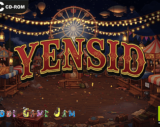

Rewing : Code Gam Jam 2026
Contexte : Un week-end, une équipe, un jeu.
Voici le principe de la Code Game Jam.
Vous aurez peut être pu la découvrir sur la page de l'édition 2025 que vous pourrez retrouver plus haut :
J'ai aussi eu l'opportunité de participer à la dixième édition de la Code Game Jam.
Cette édition n'a pas seulement été plus "simple" que la précédente : elle a été plus productive, plus intense,
plus riche en apprentissages et en expérience humaine.
Cette année, le thème était "Fête des clicks", à intérpréter comme bon nous le semblait.
Avec mon équipe, composée de 5 membres investis que j'ai pu, pour certains, découvrir, pour d'autes, redécouvrir, nous avons
développé Yensid : une fête forraine déserte qui est en fait un hub de mini-jeux basés sur les réflexes et l'aim training :
une grande roue où les cabines s'allument aléatoirement qu'il faut éteindre pour ne pas perdre d'éléctricité, un jeu de tir à la cannette,
un punching ball...
C'est avec joie que je me tourne désormais vers l'édition 2027, avec l'envie et la motivation de faire un jeu toujours plus abouti chaque année.
À propos
J'ai pu, à travers ce projet, me familiariser avec les compétences suivantes :
- La programmation orientée objets (Godot)
- La solidarité d'équipe
- La gestion de projets
- Le design sonore / MAO / utilisation d'Intelligence Artificielle dans le domaine du design
Galerie & Rendu
